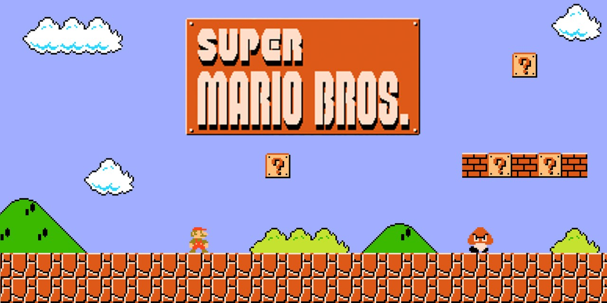
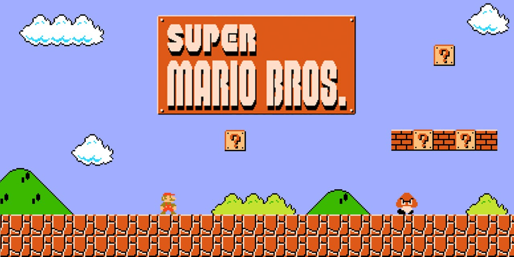

Tipos de videojuegos
En el universo de los videojuegos existen una gran variedad de tipos los cuales Cada tiene sus distintas caracteristicas y modos de juego, a continuacion dee presentamos los modos de juegos mas comunes que se pueden hayar.
De Accion
de lucha y peleas. Basados en ejercicios de repetición (por ejemplo, pulsar un botón para que el personaje ejecute una acción). aquie se pueden encontrar grandes marcas de juegos como lo es Mortal kombat, resident evil, God of war, entre otros.


De Arcade
plataformas, laberintos, aventuras. El usuario debe superar pantallas para seguir jugando. Imponen un ritmo rápido y requieren tiempos de reacción mínimos, eneste juego podemos encontrar grandes clasicos como lo son Mario, Pac-man, Bom squad, zelda y muchas mas entregas de videojuegos graficos que conocemos.
 

Deportivos
esta clase de juegos recrean cualquier tipo de deporte ya sean tenis, baloncesto, baseboll, carreras y futbol, el mas conocido. en este tipo de juegos debemos desarrollar nuestras tacticas de juego de la vida real para poder ganar las partidas y niveles presentes en cada juego, aqui podemos encontrar juegos como PES, Forza Horizon, Need for Speed, NBA, entre otros


estrategicos
aqui podemos encontrar juegos del tipo aventuras, rol, juegos de guerra, entre otros...Consisten en trazar una estrategia para superar al contrincante. Exigen concentración, saber administrar recursos, pensar y tecnicas de supervivencia. entre los mas conocidos podemos encontrar League of legends, Call of Duty, minecraft, Etc.